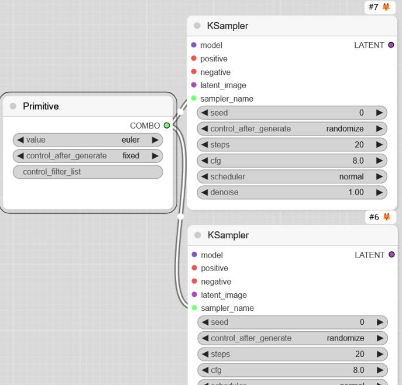
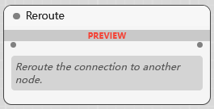

内置节点 1
许多节点的参数, 背后有很深入的数学原理, 我们如果只是使用它, 不必去深究, 先看一看, 有一个印象, 然后在使用中去调参, 看看参数对结果有什么影响, 就能慢慢熟悉.
其实简单使用, 很多节点都用不到.
utils 功能节点
Primitive 元节点
Primitive 节点的主要作用是提供基本数据类型（数字、字符串、布尔值等）供其他节点使用。非常适合初始化参数、调试流程或作为其他复杂操作的输入
连接到目标节点的输入端口时，ComfyUI 会根据端口类型自动匹配类型.
例如, 连接到采样器的种子, 他是整数类型
连接到 cfg 他是小数
连接到文本编码器, 他是字符串
连接到采样器节点, 则可以用来选择采样器

例如这样连接两个采样器节点之后, 可以让两者使用同一个采样器, 还能控制采样器变化, 甚至使用正则表达式过滤采样器 (具体用法高阶在介绍)
元节点作为布尔值类型时, 可以用作控制流程节点的 分支 或 功能开关 (具体用法高阶在介绍)
Primitive 节点就像编程中的变量或常量，虽然功能简单，但在构建复杂流程时非常基础和重要
Note 注释节点
注释节点就是用来注释你的工作流用的, 让其他人使用你的工作流时看得懂
Reroute 转接节点

转接节点就像水管的三通管, 四通管…
sampling 采样器节点
Ksampler K采样器节点
前面已经介绍过, 再次提一下, 他是图像生成的核心节点, 任务是使用提供的模型, 正负条件, 设置的参数, 选择的采样器等对潜空间图像去噪, 输出你想要的图像 (还需要 VAE 解码)
Ksampler(Advanced) 高级K采样器节点
它大部分参数和 K 是一样的, 它最大的特点是随机性增加, 灵活性更大
- add_noise
参数如果为开启, 则会在采样过程中增加随机噪声, 从而增加结果的多样性. 但同时, 开启后，即使种子值相同，结果可能会有显著差异，种子的可复现性降低
- start_at_step/end_at_step
开始/结束采样步数, 这两个参数可以控制采样在什么阶段进行, 从而增加更多的实验玩法, 以及更灵活的调节.
end_at_step 可以大于 steps, 但会在总步数 steps 结束就停止
- return_with_leftover_noise
主要用于控制是否保留生成图像过程中的剩余噪声，以便在后续的图像生成任务中使用，从而实现更连贯和一致的图像生成效果
custom_sampling 自定义采样
SamplerCustom 自定义采样器节点
用于实现自定义采样逻辑的节点，它允许用户对图像生成的采样过程进行更灵活的控制. 将采样器和调度器分成单独节点 (提供了更多的选择, 这些选择后面会具体介绍), 将采样过程的中间结果 denoised_output 也输出
SamplerCustomAdvanced 高级自定义采样器节点
高级的, 则将噪声, 引导条件, 采样器, 调度器都单独分开了
samplers 其他采样器
- KsamplerSelect 基础采样器
- SamplerEulerAncestral
利用欧拉方法的特性来生成符合特定噪声计划的样本，从而为采样过程做出贡献.
eta参数: 指定欧拉方法的步长，影响采样过程的粒度
s_noise参数: 确定每一步添加的噪声规模，影响样本的变异性
- SamplerEulerAncestralCFG++
eta参数: 指定采样器的步长，影响采样步长的粒度和生成样本的整体平滑度
s_noise参数: 确定采样期间应用的噪声的规模
- SamplerLMS 最小均方采样器
order 参数: 指定采样过程中使用的 LMS 算法的阶数。调整此参数可以调整采样器的行为，从而影响生成样本的质量和特性
- SamplerDPMPP_3M_SDE
专门为 DPM-Solver++(3M) SDE 模型设计的采样器，允许根据指定的噪声水平和设备偏好生成样本
eta: 采样过程中应用的噪声规模
s_noise: 指定采样过程中使用的噪比，影响生成样本的方差
noise_device: 确定采样计算是在CPU还是GPU上执行
- SamplerDPMPP_2M_SDE
DPMPP_2M_SDE 模型采样器
solver_type: 指定采样过程中使用的求解器类型
- SamplerDPMPP_SDE

DPM++ SDE（随机微分方程）模型采样器
eta: 指定SDE求解器的步长
s_noise: 决定采样过程中应用的噪声水平
r: 控制采样过程中的降噪率
- SamplerDPMPP_2S_Ancestral
- SamplerDPMAdaptative
用于深度概率建模的采样器，根据动态输入参数和条件优化采样过程。它侧重于通过实时调整参数来提高复杂模型中采样的效率和准确性
order: 指定采样过程中使用的微分方程求解器的顺序
rtol: 定义求解器的相对公差
atol: 设置求解器的绝对公差
h_init: 求解器的初始步长
pcoeff: 系数与自适应算法中的比例控制相关
icoeff: 自适应算法的积分系数
dcoeff: 是自适应算法中的导数系数
accept_safety: 自适应算法中接受步长的安全系数
- SamplerLCMUpscale LCM放大采样器
scale_ratio: 指定图像应放大的比率
scale_step: 放大过程的步骤数
upscale_method: 选择用于放大图像的方法
schedulers 调度器
调度器节点是给自定义采样器节点提供调度器的节点
- BasicScheduler 基础调度器
参数前面章节都介绍过了
- KarrasScheduler K调度器
sigma_max：是采样过程开始时的噪声水平(标准差), 它决定了初始噪声的强度。较高的 sigma_max 值意味着生成过程从更高的噪声水平开始，这可能会导致更多的随机性和多样性，但也可能需要更多的采样步骤来达到高质量的图像
sigma_min：采样过程结束时的噪声水平, 它决定了最终噪声的强度。较低的 sigma_min 值意味着生成过程会尽量减少噪声，从而生成更清晰和细致的图像。较高的 sigma_min 值可能会保留一些噪声，使图像看起来更自然或艺术化
rho：控制噪声减少速率的参数。它决定了噪声水平从 sigma_max 减少到 sigma_min 的速度。影响噪声时间表的整体形状和采样动态. 较高的 rho 值会导致噪声更快地减少，从而生成过程更快地达到低噪声水平。较低的 rho 值会导致噪声减少速度较慢，生成过程更缓慢但可能更稳定
- ExponentialScheduler 指数衰减调度器
通过指数衰减控制噪声水平，平衡生成过程中的随机性和细节
- PolyexponentialScheduler 多项式指数调度器
- LaplaceScheduler 拉普拉斯调度器
mu 参数：是拉普拉斯分布的位置参数，决定了分布的中心位置。影响噪声的平均水平。在大多数情况下，mu 保持为 0 即可，因为噪声通常是对称分布的。如果有特殊需求，可以调整 mu 来偏移噪声分布的中心
beta 参数：拉普拉斯分布的尺度参数，决定了分布的宽度或散布程度。参数控制噪声的强度和变化范围。较大的 beta 值会导致更强的噪声，生成过程中的随机性和多样性增加；较小的 beta 值会导致较弱的噪声，生成的图像更清晰和细致
- VPScheduler 方差保持调度器
基于方差保持调度方法生成一系列噪声水平
beta_d: 确定整体噪声水平分布，影响生成噪声水平的方差
beta_min: 设置噪声水平的最小边界，确保噪声不会低于某个阈值
eps_s: 调整起始的epsilon值，微调扩散过程中的初始噪声水平
- BetaSamplingScheduler
alpha：控制噪声分布的左侧形状，较大的值使噪声在初始阶段迅速减少
beta：控制噪声分布的右侧形状，较大的值使噪声在后期阶段迅速减少
- SDTurboScheduler SDTurbo调度器
SDXL Turbo 模型使用的调度器 (SDXL Turbo 模型也可以用其他调度器), 其他模型使用基本出不来好图. 最大步数只有 10
- AlignYourStepsScheduler
英伟达推出的优化采样步骤的调度器, 不能低于 10 步, 支持 sd1, sdxl, svd
- GITSScheduler

coeff参数: 影响采样过程中使用的噪声级别。允许您调整噪声的强度，这会影响生成图像的纹理和细节, 较高的值可以添加更多纹理，而较低的值可以使图像平滑
- LTXVScheduler
LTX-Video 视频模型的调度器
max_shift：
base_shift：
stretch：是否将 sigmas 拉伸到 [terminal，1] 范围内
terminal：sigmas 拉伸后的终端参数
sigmas
- SplitSigmas
基于指定的步长索引将一系列西格玛值划分为两个子集. 在生成模型中，操纵噪声水平会显著影响模型的输出质量和多样性
- SplitSigmasDenoise
基于去噪因子将给定的 Sigmas 序列划分为两个不同的序列, 从而能够更精确地控制生成质量
- FlipSigmas
通过颠倒西格玛值的顺序来操纵西格玛值序列
guiders 引导
- CFGGuider
- DualCFGGuider
将双条件引导因子应用于模型来增强采样过程。它允许指定两个不同的条件及其各自的指导量，从而对生成过程进行更细致的控制
- BasicGuider
noise 噪声
- RandomNoise
- DisableNoise
禁用采样过程中的噪声生成
视频采样器节点
VideoLinearCFGGuidance
VideoTriangleCFGGuidance
通过应用在规定时间内线性变化的特定引导模式来增强视频内容的生成